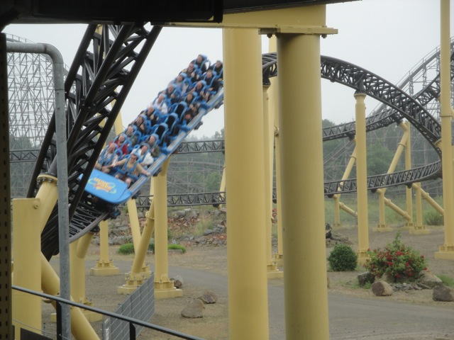
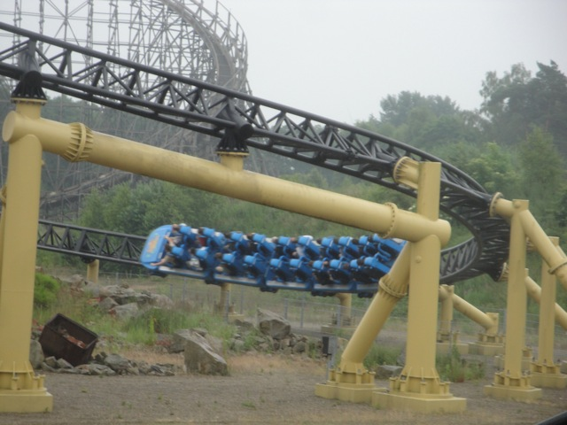
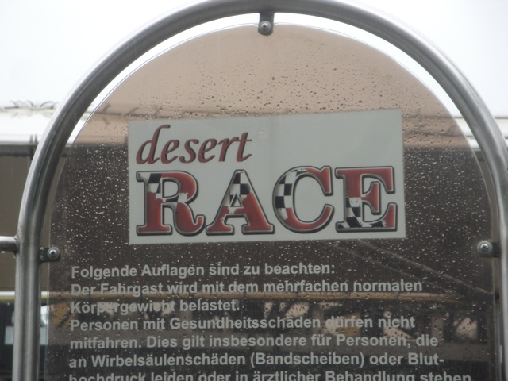

| |
Desert Race Review

We're here at Heide Park. After getting in the seats and pulling down the pointless OTSRs, we roll foreword, the lights flash. We see the red lights go off, one by one, until they all flash and we're off. We launch right out of the launch pad with some good speed, pinning us back to our seats and just starting out with a BANG!! We exit out of this launch that while not great, is still pretty good, and head straight into a turn, giving us some serious laterals. Hmm, it's not often we go from a launch into a turn of laterals, but hey. I'm enjoying this. We then head into this sort of wave airtime hill that not only gives us a nice little pop of ejector air, but also some more laterals. We then head into a nice sweeping turn before we head up another small hill and get some airtime. Hmm, I'm begenning to notice a pattern with this ride. And yep. It repeats. Low to the ground sweeping curve, some nice laterals, and we head over a small little hill and get some airtime. Wee. And hey. Another airtime hill. Wee. Out of the seats we go. And now we hit the brakes on the way down, Full Throttle style. Well, we still have a little speed, which we use in another banked turn and into the real final brake run. So yeah. That's Desert Race. On the one hand, it's a really fun ride. It's got some nice speed, a lot of good laterals, and despite the pointless OTSRs, there's no headbanging. But on the downside, while it's a very fun ride, it's also a very forgettable ride. And I'm not exactly sure why, but it is. I always keep forgetting that I rode this ride. I know when I think about Heide Park, I think about Collosus. I think about Krake. But for some reason, I never think about Desert Race. I literally forgot that I rode it until I did some research when writing my Heide Park review. So there's something about the ride that's missing, but I just can't seem to put my finger on it. I'd definetly give it a ride as it's fun and all, just don't expect to be talking about it all day.
7/10
Location: Heide Park
Opened: 2007
Built by: Intamin
Last Ridden: June 27, 2012
Desert Race Photos


Home
|